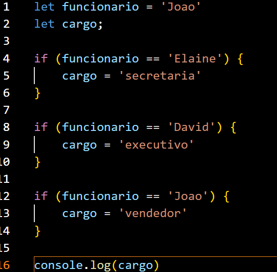
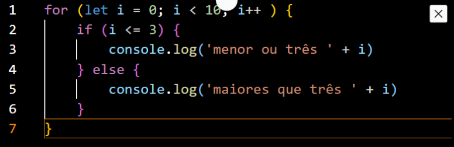

1) Sobre linguagens compiladas
a) Uma linguagem compilada é aquela que mesmo tendo processo de compilação, ela precisa do executor da linguagem para funcionar, por exemplo "node app.js" b) Apesar do termpo compilada, uma linguagem compilada não precisa passar pelo processo de compilação c) Uma linguagem compilada é aquela que gera um arquivo executável e roda sem nenhum interpretador, como uma chamada direta ao arquivo - "./app.exe" d) O processo de compilação não se escala conforme a complexidade do código2) Ainda sobre linguagens compiladas
a) Quanto maior o tamanho do programa a ser compilado, menor é o tempo de compilação b) O processo de compilação não se escala conforme a complexidade do código c) Uma linguagem interpretada precisa do interpretador para funcionar d) Quanto maior o tamanho do programa a ser compilado, maior é o tempo de compilação3) Sobre linguagens interpretadas
a) Uma linguagem interpretada não possui a etapa de compilação. O que ocorre é que a compilação da linguagem se da em tempo de execução, em pequenos trechos de código b) Apesar do termpo compilada, uma linguagem compilada não precisa passar pelo processo de compilação c) O processo de compilação não ocorre em nenhum momento ao longo da execução da linguagem executada d) Uma linguagem interpretada é aquela que gera um arquivo executável e roda sem nenhum interpretador, como uma chamada direta ao arquivo - "./app.exe"4 Avalie o código que se segue
O que imprime na console.log
a) Imprime executivo b) Imprime vendedor c) Imprime secretaria d) Não imprime nada5 Avalie o código que se segue
O que imprime na console.log
a) 01
2
3
b) 0
1
2
3
4
5
6
7
8
9
c) menor ou três 0
menor ou três 1
menor ou três 2
maiores que três 3
maiores que três 4
maiores que três 5
maiores que três 6
maiores que três 7
maiores que três 8
maiores que três 9
d)
menor ou três 0
menor ou três 1
menor ou três 2
menor ou três 3
maiores que três 4
maiores que três 5
maiores que três 6
maiores que três 7
maiores que três 8
maiores que três 9